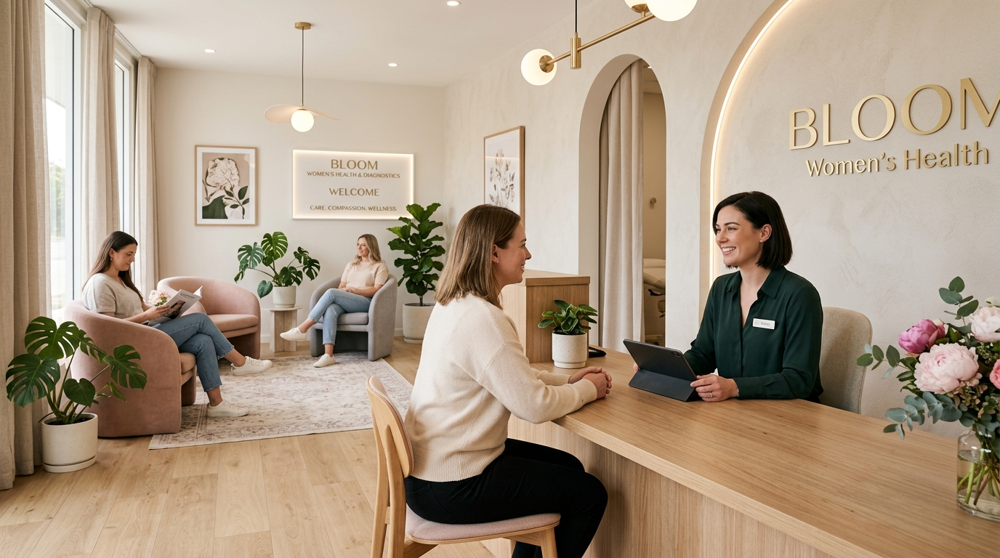
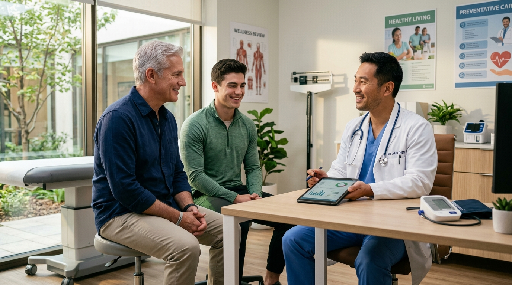
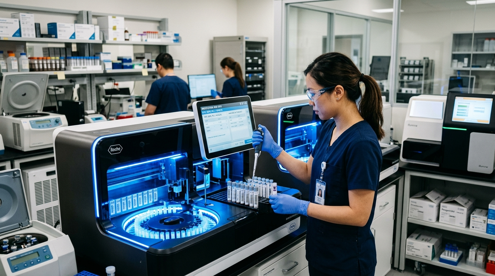
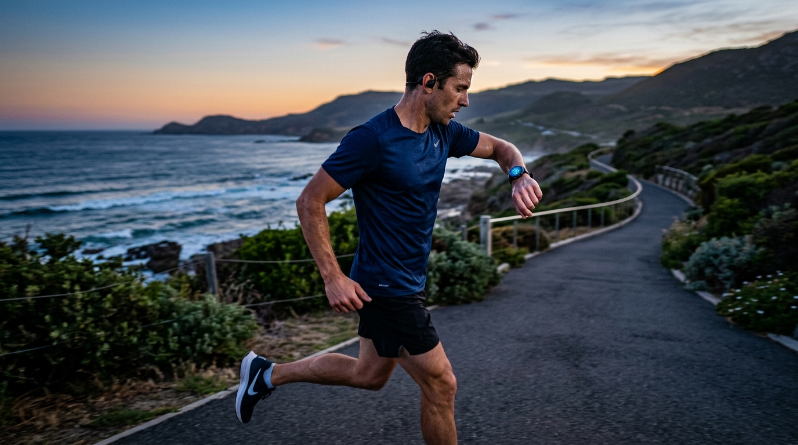

Marcadores Tumorales · Perfil Hombres · Perfil Mujeres con Exudado
Consultá presupuesto inmediato y preparación requerida por WhatsApp.
Perfiles Bioquímicos Completos
Elegí tu chequeo y consultá precio o turno por WhatsApp en el acto:

Perfil Integral Mujeres + Exudado Vaginal
Incluye: Exudado Vaginal completo (fresco y coloración de Gram para diagnóstico de Vaginosis, Trichomonas, Candida, Gardnerella), Cultivo e Identificación bacteriológica con Antibiograma, más Hemograma completo, Ferritina sérica, Subunidad Beta HCG, Perfil Hormonal (FSH, LH, Estradiol, Progesterona, Prolactina) y Urocultivo.

Perfil Completo Hombres
Incluye: Hemograma completo, Glucemia, Perfil Lipídico (Colesterol Total, HDL, LDL, Triglicéridos), Hepatograma, Uricemia (Gota), Uremia, Creatinina, Testosterona Total y Libre, PSA Total prostático, TSH Ultrasensible y Orina Completa.

Panel Marcadores Tumorales
Incluye: PSA Total y Libre (Próstata), CEA (Antígeno Carcinoembrionario - Colon/Gastrointestinal), CA 125 (Ovario/Ginecológico), CA 15-3 (Mama), CA 19-9 (Páncreas y Vía Biliar), y AFP (Alfa-fetoproteína - Hígado y Células Germinales).
Perfil Próstata y Salud Urológica
Incluye: PSA Total, PSA Libre, Relación Porcentual PSA Libre/Total, Testosterona Total, Glucemia, Ácido Úrico, Uremia, Creatinina y Sedimento Urinario con búsqueda de hematíes.
Perfil Clínico Completo
Incluye: Hemograma completo, Glucemia, Colesterol Total, HDL, LDL, Triglicéridos, Hepatograma (GOT, GPT, Bilirrubinas), Uremia, Creatinina y Orina completa.

Perfil Tiroideo & Energía
Incluye: TSH ultrasensible, T4 Libre, T3 y Anticuerpos Anti-TPO. Ideal ante fatiga, caída de cabello, cambios de peso o control de medicación (Levotiroxina).

Perfil Deportivo & Gym
Incluye: Hemograma, Ionograma plasmático (Sodio/Potasio), CPK muscular (daño y recuperación), Magnesio, Ferremia, Ferritina sérica, Glucemia y Hepatograma.

Perfil Vitamina D & Defensas
Incluye: Vitamina D (25-OH), Vitamina B12, Calcio iónico, Fósforo sérico, Zinc y Ferritina sérica para evaluar defensas del organismo.
Extracciones a Domicilio en Paso de los Libres
Un bioquímico de nuestro equipo va a tu domicilio con materiales descartables estériles y valija térmica de refrigeración. Ideal para personas mayores, niños, personas con movilidad reducida o quienes prefieran la comodidad de su casa.
Sede Central
Sarmiento 902 Paso de los Libres, Corrientes, Argentina.
Lunes a Viernes: 07:00 a 19:00 hs
Sábados: 07:30 a 12:00 hs
07:00 a 10:30 hs (Con ayuno correspondiente)
Obras Sociales & Prepagas
Atendemos con las principales coberturas de la provincia de Corrientes y a nivel nacional:
¿No encontrás tu obra social? Escribinos al WhatsApp y te confirmamos cobertura al instante.